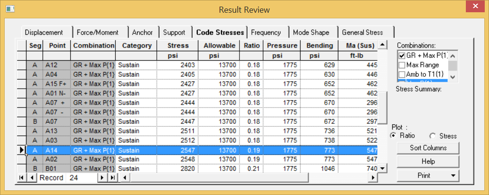

Reviewing Code Stress Results (Result Grids)
You will now review code stresses in the Results grids.
1. Select Result > Interactive > Result Grid and click on the Code Stresses tab.
- The graphic shows a color code stress plot based on the selected Ratio or Stress radio button and the selected code combinations.
- To view sustained stresses only in the code stresses tab and graphic plot, uncheck all the combinations except GR+MaxP.
| Note: |
To uncheck all the combinations in the right window panel, click on the top combination name hold the SHIFT key down and click on the bottom combination name then uncheck any of the check boxes. The CTRL key can also be used for multiple selections. |
- Double click on the Ratio column to sort the maximum sustained stress ratio which shows 0.42
{.41} at point A14.
